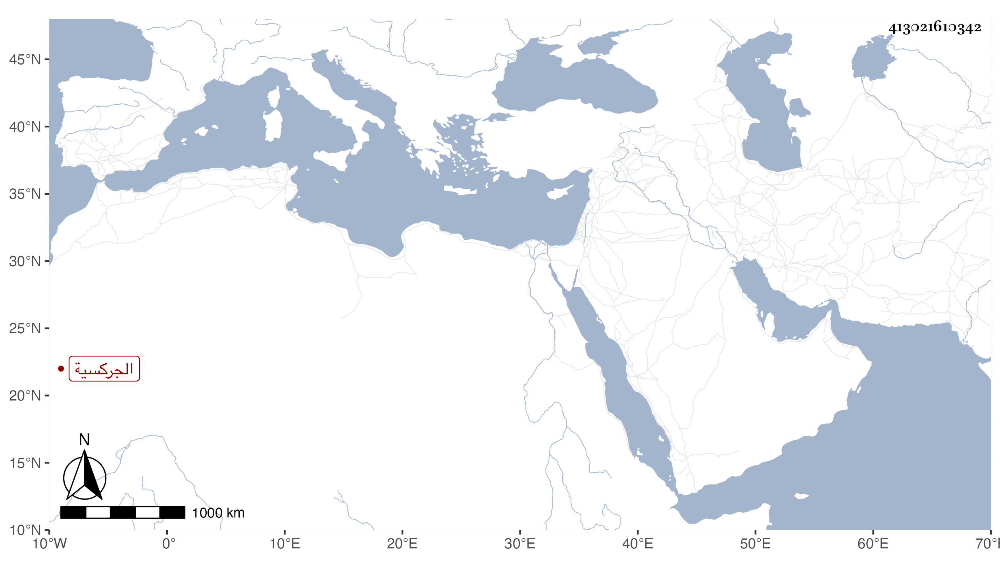

0902Sakhawi.DawLamic.ITO20230111-ara1.EIS1600.413021610342
Biography ID: 413021610342
417
شكرباى الجركسية الناصرية الاحمدية زوجة الظاهر خشقدم كانت من سراري الناصر فرج ومحررية ولكن لم تلد له وتزوجت بعده الأمير ابرك الجكمي فاستولدها ذكرا وانثى هي أم الشهابي أحمد حفيد العيني ، وبعد موته تزوجها خشقدم وهو حينئذ خاصكي فاستولدها ثلاثة ودامت معه حتى تسلطن وصارت خوند العظمى وراعي قدمها فلم يتزوج عليها بل تسري بعدة سرار صرن امهات اولاد مع انعزاله عنها ومزيد اختصاصها ومحبتها إلى أن ماتت وقد قاربت الثمانين في جمادى الأولى سنة سبعين وصلى عليها تحت طبقة الزمام تقدم الناس الخليفة ودفنت بتربة زوجها ، وكانت منطوية على خير ودين محمودة الأفعال والاقوال معتقدة في سيدى أحمد البدوي . متوجهة لمولدة في كل سنة رحمها الله وإيانا .
